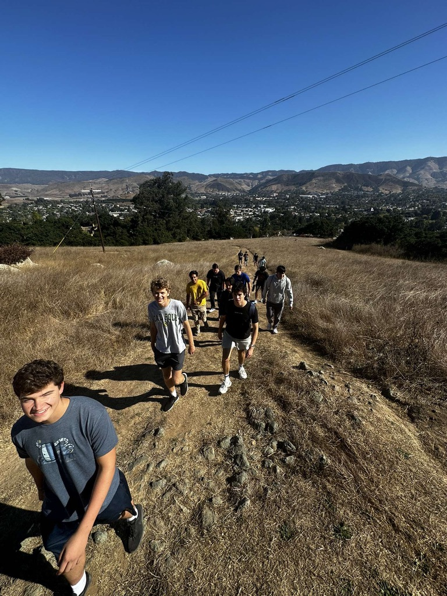
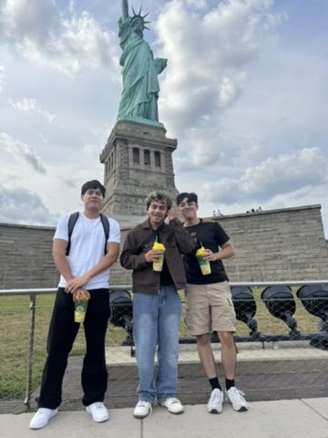
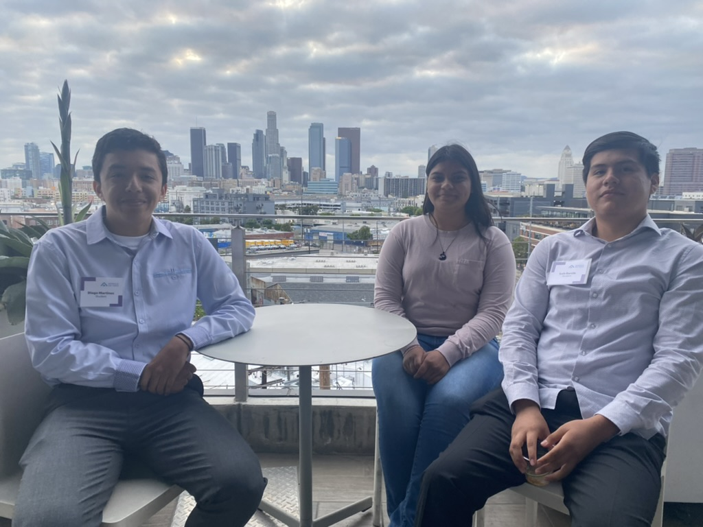
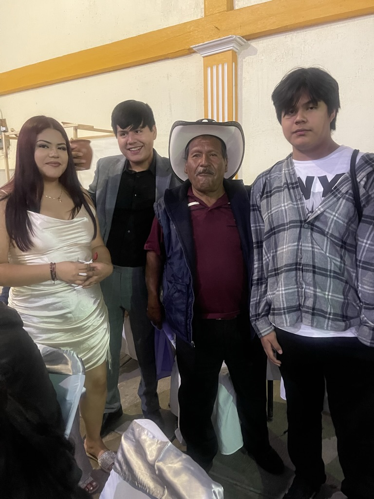
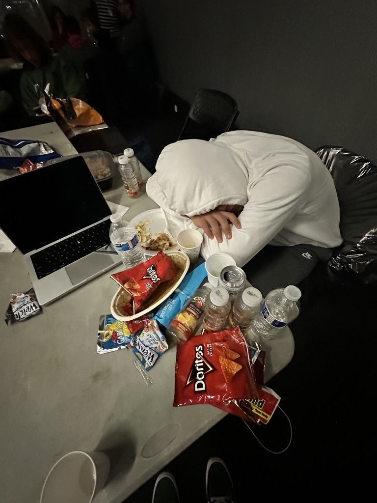
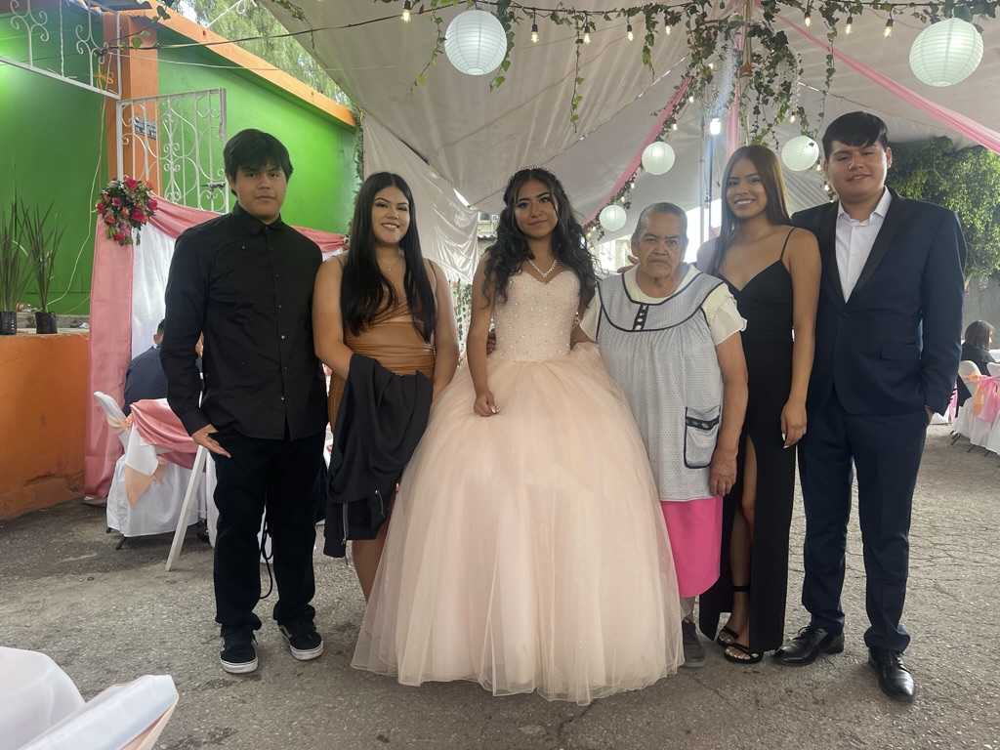
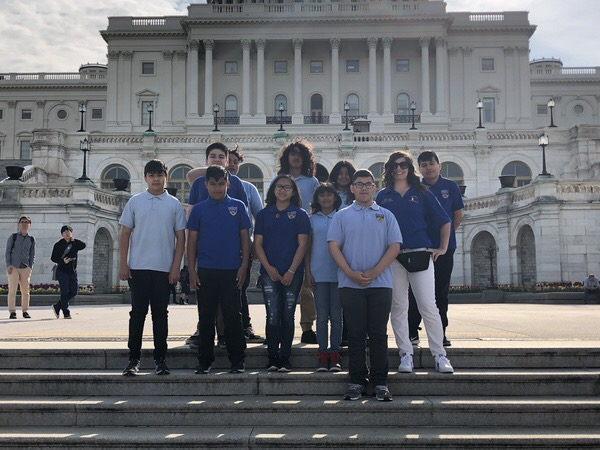

Sub-trail 5.1
Cultural Identity

My parents immigrated from Mexico to California in search of better opportunities. This site turns that idea into a visual trail: one main path (California) with side paths branching into key opportunities that shaped who I am.
The vertical line represents California, stretching “north” as you scroll. Each glowing node is a moment where a new opportunity branched off—school, language, tech, and community. Sub-trails show how those moments connect to who I am today.






